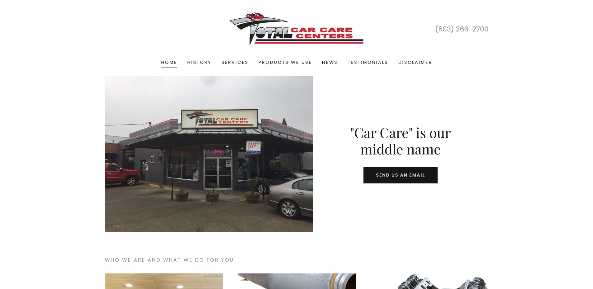

Available for projects • WordPress + VA
I build high-converting WordPress sites and keep businesses running as a Virtual Assistant.
Clean design, fast performance, and organized execution. You get a website that sells + a VA who makes the chaos behave.
Fast
Performance-first builds
Clean
Modern UI + UX
Reliable
VA systems + ops support
Rafael Mercado • WP Dev + VA
Web builds • Support
⭐ 5+ WordPress Sites Built
Elementor
Speed
SEO
Automation
What you get
- Premium site layout
- Mobile-first design
- Smart VA workflows
Turnaround
Clear timeline + weekly updates.
Typical: 7–14 days⚡ Speed optimized
🧠 Systems thinking
✨ Vibrant design
Design that sells. Support that scales.
I work like a small studio: strategy + build + ongoing support. WordPress projects get fast performance, clean structure, and an experience that feels premium. VA work gets organized systems and reliable execution.
WordPress Dev
Custom builds, Elementor, theme customization, speed, SEO-ready structure, maintenance.
UI/UXSpeedSEOSecurity
Virtual Assistant
Email + calendar, CRM updates, admin support, research, client onboarding, social scheduling.
OpsSystemsContentSupport
Social Media Management
Content planning, captions, scheduling, inbox monitoring, analytics and light engagement.
PlanningContentEngagement
Services
Pick what you need. Or mix both for the “done-for-you” experience.
WordPress Website Build
Modern layout, mobile-first, clear messaging, and conversion-focused sections.
- Home + inner pages
- Elementor / theme edits
- Speed + basic SEO
Optimization + Maintenance
Keep it fast, secure, and stable so you can sleep like a happy mammal.
- Performance tuning
- Updates + backups
- Bug fixes
Virtual Assistant Support
Admin tasks handled with systems, documentation, and consistency.
- Email + calendar
- CRM + spreadsheets
- Client support
Systems + Automation
Workflows that remove friction: templates, SOPs, dashboards, and automation ideas.
- Notion hubs
- Process docs
- Task pipelines
Selected Work


Proof & Personality
“The site loads faster, looks cleaner, and finally converts the way it should.”
C.H.
Business Owner • Email feedback
“Content is consistent now, engagement is up, and I don’t stress about posting.”
Mari
Manager • Email feedback
“Tasks get handled without reminders. My week feels lighter.”
E.
E-commerce Owner • Email feedback
Let’s build something clean and profitable.
Tell me what you need (website, VA support, or both). I’ll reply with next steps and a clear plan.
Email
rafaellmrcs@gmail.com
Timezone
Asia/Manila